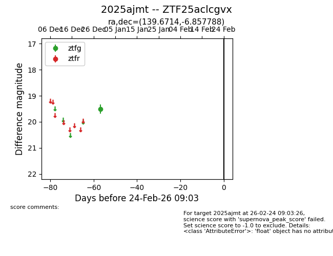
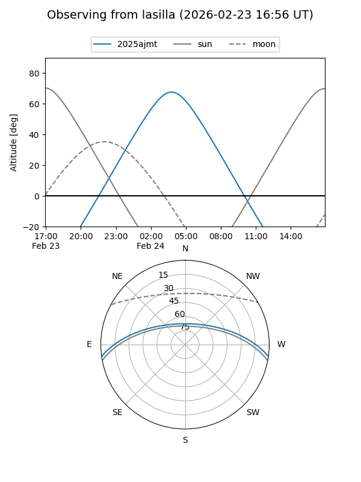
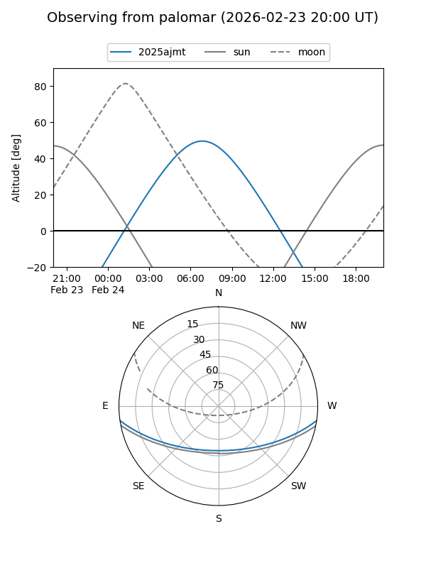

2025ajmt
Target 2025ajmt at 2026-01-09 12:49
Aliases and brokers:
FINK: link
Lasair: link
ALeRCE: link
TNS: link
YSE: link
alt names
ZTF25aclcgvx (ztf,fink_ztf)
2025ajmt (tns,yse)
Coordinates:
equatorial (ra, dec) = 139.6714,-6.85779
equatorial (HMS+DMS) = 09:18:41.12,-06:51:28.04
galactic (l, b) = (238.3377,+28.35996)
Flags:
Photometry:
last ztfg=19.50
1 ztfg detections
Lightcurve

Visibility


Additional plots